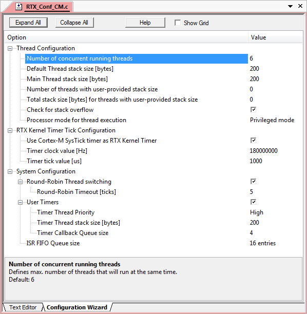

The file RTX_Conf_CM.c is used to define the configuration parameters of CMSIS-RTOS RTX. This file should be part of every project that is using the CMSIS-RTOS RTX kernel.
#ifndef OS_TASKCNT
#define OS_TASKCNT 6
#endif
#ifndef OS_STKSIZE
#define OS_STKSIZE 50 // this stack size value is in words
#endif
#ifndef OS_MAINSTKSIZE
#define OS_MAINSTKSIZE 50 // this stack size value is in words
#endif
#ifndef OS_PRIVCNT
#define OS_PRIVCNT 0
#endif
#ifndef OS_PRIVSTKSIZE
#define OS_PRIVSTKSIZE 0 // this stack size value is in words
#endif
#ifndef OS_STKCHECK
#define OS_STKCHECK 1
#endif
#ifndef OS_RUNPRIV
#define OS_RUNPRIV 1
#endif
#ifndef OS_SYSTICK
#define OS_SYSTICK 1
#endif
#ifndef OS_CLOCK
#define OS_CLOCK 12000000
#endif
#ifndef OS_TICK
#define OS_TICK 1000
#endif
#ifndef OS_ROBIN
#define OS_ROBIN 1
#endif
#ifndef OS_ROBINTOUT
#define OS_ROBINTOUT 5
#endif
#ifndef OS_TIMERS
#define OS_TIMERS 1
#endif
#ifndef OS_TIMERPRIO
#define OS_TIMERPRIO 5
#endif
#ifndef OS_TIMERSTKSZ
#define OS_TIMERSTKSZ 50 // this stack size value is in words
#endif
#ifndef OS_TIMERCBQS
#define OS_TIMERCBQS 4
#endif
#ifndef OS_FIFOSZ
#define OS_FIFOSZ 16
#endif
#ifndef OS_MUTEXCNT
#define OS_MUTEXCNT 8
#endif
#define OS_TRV ((uint32_t)(((double)OS_CLOCK*(double)OS_TICK)/1E6)-1)
void os_idle_demon (void) {
for (;;) {
}
}
#if (OS_SYSTICK == 0) // Functions for alternative timer as RTX kernel timer
int os_tick_init (void) {
return (-1);
}
uint32_t os_tick_val (void) {
return (0);
}
uint32_t os_tick_ovf (void) {
return (0);
}
void os_tick_irqack (void) {
}
#endif // (OS_SYSTICK == 0)
#define OS_ERROR_STACK_OVF 1
#define OS_ERROR_FIFO_OVF 2
#define OS_ERROR_MBX_OVF 3
void os_error (uint32_t error_code) {
switch (error_code) {
case OS_ERROR_STACK_OVF:
break;
case OS_ERROR_FIFO_OVF:
break;
case OS_ERROR_MBX_OVF:
break;
}
for (;;);
}
#include "RTX_CM_lib.h"
The configuration file uses Configuration Wizard Annotations. Depending on the development tool that is used, this might lead to a more user friendly graphical representation of the settings. The following is a screenshot of the same configuration file using µVision's Configuration Wizard view:
